<!DOCTYPE html>
<html lang="ml">
<head>
  <meta charset="utf-8">
  <meta name="viewport" content="width=device-width, initial-scale=1.0">
  <title>Pages 41-60 - Class 9 Social science 2</title>
  <style>

:root {
  --bg-color: #fcfcfd;
  --card-bg: #ffffff;
  --text-color: #1e293b;
  --text-muted: #64748b;
  --primary-color: #0284c7;
  --primary-light: #e0f2fe;
  --border-color: #e2e8f0;
  --radius: 10px;
  --shadow: 0 4px 6px -1px rgb(0 0 0 / 0.05), 0 2px 4px -2px rgb(0 0 0 / 0.05);
}

body {
  font-family: -apple-system, BlinkMacSystemFont, "Segoe UI", Roboto, "Noto Sans Malayalam", "Manjari", "Gayathri", sans-serif;
  background-color: var(--bg-color);
  color: var(--text-color);
  line-height: 1.8;
  font-size: 1.1rem;
  margin: 0;
  padding: 0;
}

.container {
  max-width: 860px;
  margin: 0 auto;
  padding: 2.5rem 1.5rem 5rem 1.5rem;
}

header {
  margin-bottom: 2.5rem;
  padding-bottom: 1.5rem;
  border-bottom: 2px solid var(--border-color);
}

.badge-row {
  display: flex;
  gap: 0.5rem;
  margin-bottom: 0.75rem;
  flex-wrap: wrap;
}

.badge {
  display: inline-block;
  font-size: 0.75rem;
  font-weight: 700;
  text-transform: uppercase;
  letter-spacing: 0.05em;
  padding: 0.25rem 0.65rem;
  border-radius: 9999px;
  background: var(--primary-light);
  color: var(--primary-color);
}

.badge-medium {
  background: #fef3c7;
  color: #b45309;
}

.badge-class {
  background: #dcfce7;
  color: #15803d;
}

h1 {
  font-size: 2.1rem;
  font-weight: 800;
  margin: 0.5rem 0 1rem 0;
  line-height: 1.3;
  color: #0f172a;
}

.nav-bar {
  display: flex;
  justify-content: space-between;
  margin: 1.5rem 0;
  font-size: 0.95rem;
  flex-wrap: wrap;
  gap: 0.5rem;
}

.nav-bar a {
  color: var(--primary-color);
  text-decoration: none;
  font-weight: 600;
  padding: 0.5rem 1rem;
  border-radius: var(--radius);
  background: var(--card-bg);
  border: 1px solid var(--border-color);
  transition: all 0.2s ease;
}

.nav-bar a:hover {
  background: var(--primary-light);
  border-color: var(--primary-color);
}

.nav-bar .disabled {
  color: var(--text-muted);
  pointer-events: none;
  border-color: transparent;
  background: transparent;
}

.page-section {
  background: var(--card-bg);
  border: 1px solid var(--border-color);
  border-radius: var(--radius);
  box-shadow: var(--shadow);
  padding: 2rem;
  margin-bottom: 2.5rem;
}

.page-header {
  display: flex;
  align-items: center;
  justify-content: space-between;
  margin-bottom: 1.25rem;
  padding-bottom: 0.5rem;
  border-bottom: 1px dashed var(--border-color);
}

.page-number {
  font-size: 0.8rem;
  font-weight: 700;
  text-transform: uppercase;
  color: var(--text-muted);
  letter-spacing: 0.05em;
}

.page-content p {
  margin: 0 0 1.25rem 0;
  white-space: pre-wrap;
  word-break: break-word;
}

.page-content p:last-child {
  margin-bottom: 0;
}

.diagram-card {
  margin: 2rem 0;
  text-align: center;
  background: #f8fafc;
  border: 1px solid var(--border-color);
  border-radius: var(--radius);
  padding: 1rem;
  overflow: hidden;
}

.diagram-card img {
  max-width: 100%;
  height: auto;
  border-radius: calc(var(--radius) - 4px);
  display: inline-block;
  box-shadow: 0 2px 4px rgba(0,0,0,0.04);
}

.diagram-card figcaption {
  font-size: 0.85rem;
  color: var(--text-muted);
  margin-top: 0.75rem;
  font-weight: 500;
}

footer {
  margin-top: 3rem;
  padding-top: 2rem;
  border-top: 2px solid var(--border-color);
}

  </style>
</head>
<body>
  <div class="container">
    <header>
      <div class="badge-row">
        <span class="badge badge-class">Class 9</span>
        <span class="badge badge-medium">Malayalam Medium</span>
        <span class="badge">Social science 2</span>
        <span class="badge">Part 1</span>
      </div>
      <h1>Pages 41-60</h1>
      <div class="nav-bar"><a href="part_1_pages_2140.html">← Pages 21-40</a><a href="index.html">☰ Index</a><a href="part_1_pages_6180.html">Pages 61-80 →</a></div>
    </header>
    <main>
<section class="page-section" id="page-41">
  <div class="page-header"><span class="page-number">Page 41</span></div>
  <figure class="diagram-card" id="fig_ch03_p041_01"><figcaption>Figure fig_ch03_p041_01 (Page 41)</figcaption></figure>
  <figure class="diagram-card" id="fig_ch03_p041_02"><figcaption>Figure fig_ch03_p041_02 (Page 41)</figcaption></figure>
  <figure class="diagram-card" id="fig_ch03_p041_04"><figcaption>Figure fig_ch03_p041_04 (Page 41)</figcaption></figure>
  <figure class="diagram-card" id="fig_ch03_p041_05"><figcaption>Figure fig_ch03_p041_05 (Page 41)</figcaption></figure>
  <figure class="diagram-card" id="fig_ch03_p041_07"><figcaption>Figure fig_ch03_p041_07 (Page 41)</figcaption></figure>
  <figure class="diagram-card" id="fig_ch03_p041_08"><figcaption>Figure fig_ch03_p041_08 (Page 41)</figcaption></figure>
  <figure class="diagram-card" id="fig_ch03_p041_09"><figcaption>Figure fig_ch03_p041_09 (Page 41)</figcaption></figure>
  <div class="page-content">
    <p>“›”š–Œ‚‹ž“›Æ<br>41<br>iǒsšc<br>ŒšÅă§Œš–¢Ĺš¡}iĹ¢ŽŦDZÄ–Œ‚ā‘›Æ‚šˆ†›iŽ“šÄ<br>‚}ācnƂ›Æ¡Œ§zžÃmųœŒš–ā‘›š§iĹ¢ŽŦDZÄ<br>–Œ‚ā‘›Æ iǑsšc e†‹“¡ƀ}ų‚§  iĹ¢ŽŦDZÄ –Œ‚<br>ā‘›Æ iǑsšc e‚›s~›†Œš§ ¡Œ§ Œš–¢Ĺš¡} ˆ}›Ěš<br>Ä‹šuā‘›Æ‚šˆ†› 48 ›÷›¡–Æ•DZ–§“¡ŽiŽšĬ§<br>¡Œ§zžÃŒš–ā‘›ÆŽšzǙš†›¡ŒŽ‹žŒ›Ƃ¢„”ā‘›Æ†›ųc<br>ucuš–Œ‚Ĺ›¢Ú§ ”Þ›¢› “ŽĬ iǑښǮsÇ “œ”š<br>Ĭ§žmų›¡ƀ}ųhsšǮsÇiĹ¢ŽŦDZÄ–Œ‚Ĺ›¡<br>‚šˆ†›uDZŒš›iÅŝų<br>ˆĕšŠ§ —Ž›š† s›’ÚÄ ŽšzǙšÄ iĹÅƂ¢„”§ mų›“›}<br>ā‘›Æ£“s¢ųŽā‘›Æ¡ˆš}›†›ĚsšǮsÇ–š…šŽš§<br>gŎc sšǮsÇ ¡x›¢‚š‚›ǫ Œ’Ʃ§ sšŽŒš‚›†šÆ<br>e‚›s~›†Œš¢“†Æăž}›Æ†›ųceÆƀcf”Ǵš–c‹›Úų<br>¡‚ڝˆ}›ĚšÄŒÃ–žÃsšc<br>ŒšÅă§Œš–¢Ĺš¡}iĹ¢ŽŦDZÄ–Œ‚ā‘›¡ ‚šˆ†›uDZŒš›<br>iŽų‚‚§‰Œš›g“›¡} Žžˆc¡sšǫų †DZž†ŒÅ„¢Œtš§<br>¡‚ڝˆ}›ĚšÄŒÃ–žÃsšǮs¡‘gŦDZÄiˆ‹žtįś¢Ú§<br>fsŕ›Úų‚§ŽĬ§”šts‘šš§¡‚ڝˆ}›ĚšÄŒÃ–žÃ<br>sšǮsÇgŦDZÄiˆ‹žtįśÆƂ¢“”›Úų‚§<br>iĹ¢ŽŦDZÄ –Œ‚ā‘›Æ ¢“†ÆښĹ§ e‚DZǑc e†‹“¡ƀ}<br>ų‚›†§ –ŒŝĹ›Æ†›ųǫ esc sšŽŒšsų mŦ¡sšĬš<br>›Ž›Úšc?<br>†Æs››Ğǫ ‹žˆ}c (x›Ņc 2.17) ˆŽ›¢”š…›ă§ ŒÃ–žÃsšǮs‘¡}<br>ŽĬ§”štsÇn¡‚š¡Ú¡ų§s¡ĬśˆĞ›s¡ƀ}Ĺže“¡}<br>–ĕšŽu‚›Œ†Ǡ›šÚž<br>z<br>¡‚ڝˆ}›ĚšÄŒÃ–ž›¡źeŠ›Ú}Ɣšt<br>z</p>
  </div>
</section>
<section class="page-section" id="page-42">
  <div class="page-header"><span class="page-number">Page 42</span></div>
  <figure class="diagram-card" id="fig_ch03_p042_01"><figcaption>Figure fig_ch03_p042_01 (Page 42)</figcaption></figure>
  <figure class="diagram-card" id="fig_ch03_p042_02">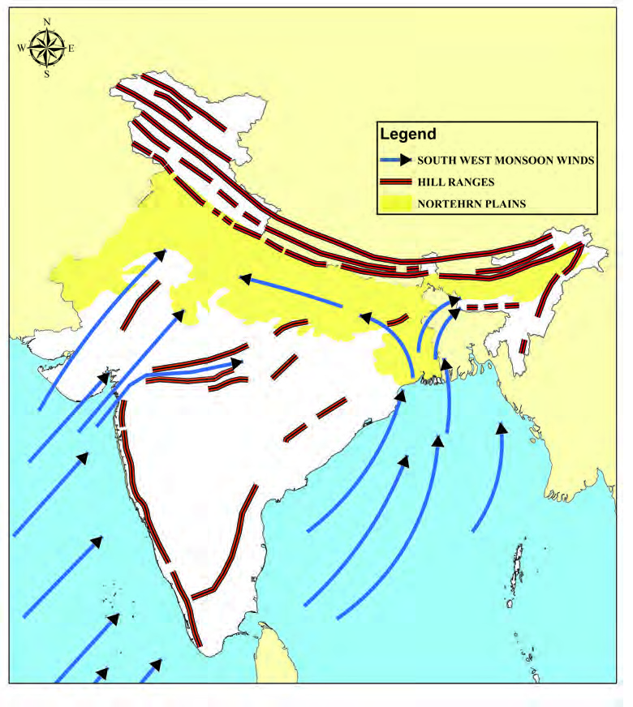<figcaption>Figure fig_ch03_p042_02 (Page 42)</figcaption></figure>
  <figure class="diagram-card" id="fig_ch03_p042_04"><figcaption>Figure fig_ch03_p042_04 (Page 42)</figcaption></figure>
  <figure class="diagram-card" id="fig_ch03_p042_05"><figcaption>Figure fig_ch03_p042_05 (Page 42)</figcaption></figure>
  <figure class="diagram-card" id="fig_ch03_p042_06"><figcaption>Figure fig_ch03_p042_06 (Page 42)</figcaption></figure>
  <figure class="diagram-card" id="fig_ch03_p042_07"><figcaption>Figure fig_ch03_p042_07 (Page 42)</figcaption></figure>
  <figure class="diagram-card" id="fig_ch03_p042_08"><figcaption>Figure fig_ch03_p042_08 (Page 42)</figcaption></figure>
  <figure class="diagram-card" id="fig_ch03_p042_09"><figcaption>Figure fig_ch03_p042_09 (Page 42)</figcaption></figure>
  <div class="page-content">
    <p>‹šuc-<br>42<br>–žx›s<br>¡‚ڝˆ}›ĚšÄŒÃ–žÃsšǯ§<br>ˆÅ“‚†›ŽsÇ<br>iĹ¢ŽŦDzÄ–Œ‚āÇ<br>gŦDz<br>gŦDz<br>¡‚ڝˆ}›ĚšÄŒÃ–žÃsšǯsÇ<br>¡‚ڝˆ}›ĚšÄŒÃ–žÃsšǯsÇ<br>eŠ›Ú}Ɣšt<br>eŠ›Ú}Ɣšt<br>ŠcušÇiÇÚ}Ɣšt<br>ŠcušÇiÇÚ}Ɣšt<br>ŒÃ–žÃsšǯsÇ<br>ŒÃ–žÃsšǯsÇ<br>x›Ņc2.17<br>–ŭŽ“†c<br>ÆǮšƂ¢„”Ĺ›ž¡}<br>sŽ›¢Ú§<br>Ƃ¢“”›Úų<br>ŠcušÇiÇÚ}ƔštŽĬ§iˆ”šts‘š›ˆ›Ž›ųpų§s›’Ú§<br>„›”›Æ ƖǥˆŅš–Œ‚Ĺ›Æ Ƃ¢“”›ă§ “Ä¢‚š‚›Æ Œ’<br>†Æsųˆ}›Ěš„›”›Æucuš–Œ‚Ĺ›¢Ú§Ƃ¢“”›Úų<br>iˆ”štšs¡Ğ ˆDŽ›ŒŠcušÇ Šœ—šÅ iĹÅƂ¢„”§ Ɨ›<br>mų›“›}ā‘›ÆŒ’†Æs›Œ¢ųųg‚§eŽš“›ˆÅ“‚†›ŽƩ§<br>–ŒšŦŽŒš› †œāų eŠ›Ú}ƔštŒš› ˆĕšŠ§ –Œ<br>‚Ĺ›Æ“ă§sž}›¢ăŽscˆ}›ĚšÄ—›ŒšĹ›¡źe}›“šŽ<br>¢Œt›Æ“¡ŽŒ’¡Ĺ›Úsc ¡xƭų<br>–žx›s<br>¡‚ڝˆ}›ĚšÄŒÃ–žÃsšǯsÇ<br>ˆÅ“‚†›ŽsÇ<br>iĹ¢ŽŦDzÄ–Œ‚c<br>ŽšzǙš†›Æ ¡‚ڝˆ}›ĚšÄ ŒÃ–žÃŒ’ “‘¡Ž ˆŽ›Œ›‚Œš§<br>sšŽ¡ŒŦš›Ž›Úc?<br>MAP NOT TO SCALE</p>
  </div>
</section>
<section class="page-section" id="page-43">
  <div class="page-header"><span class="page-number">Page 43</span></div>
  <figure class="diagram-card" id="fig_ch03_p043_01"><figcaption>Figure fig_ch03_p043_01 (Page 43)</figcaption></figure>
  <figure class="diagram-card" id="fig_ch03_p043_02"><figcaption>Figure fig_ch03_p043_02 (Page 43)</figcaption></figure>
  <figure class="diagram-card" id="fig_ch03_p043_03">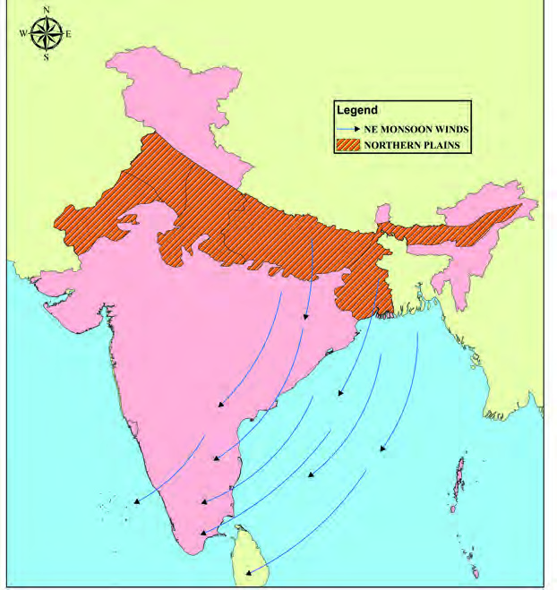<figcaption>Figure fig_ch03_p043_03 (Page 43)</figcaption></figure>
  <figure class="diagram-card" id="fig_ch03_p043_05"><figcaption>Figure fig_ch03_p043_05 (Page 43)</figcaption></figure>
  <figure class="diagram-card" id="fig_ch03_p043_06"><figcaption>Figure fig_ch03_p043_06 (Page 43)</figcaption></figure>
  <figure class="diagram-card" id="fig_ch03_p043_07"><figcaption>Figure fig_ch03_p043_07 (Page 43)</figcaption></figure>
  <figure class="diagram-card" id="fig_ch03_p043_08"><figcaption>Figure fig_ch03_p043_08 (Page 43)</figcaption></figure>
  <figure class="diagram-card" id="fig_ch03_p043_09"><figcaption>Figure fig_ch03_p043_09 (Page 43)</figcaption></figure>
  <div class="page-content">
    <p>“›”š–Œ‚‹ž“›Æ<br>43<br>zžÃ Œ‚Æ ¡–ˆ§ǮcŠÅ “¡Ž †œ‘ų ¡‚ڝˆ}›ĚšÄ ŒÃ<br>–žÃsšŒš§iĹ¢ŽŦDZÄ–Œ‚Ƃ¢„”¡ĹƂ…š† Œ’Úšc<br>“}ڝs›’ÚČÖžÃsšc<br>–žŽDZ¡ź<br>„䛁šÅ…¢uš‘Ĺ›¢Úǫ<br>e†cŒžc<br>iĹ¢ŽŦDZÄ<br>–Œ‚Ĺ›Æ<br>†›†›ų›Žų<br>†DZž†ŒÅ„¢Œt<br>⢌<br>¡‚¢ÚšĞ§<br>ˆ›Ä“šāų<br>ŒÃ–ž›¡ź<br>ˆ›Ä“šāÆښc<br>mų§<br>“›¢”•›<br>ƀ›Úų h sšĹ§ iĹ¢ŽŦDZÄ –Œ‚Ƃ¢„”ŧ iăŒÅ„¢Œt<br>Žžˆ¡ƀ}sc g“›¡}<br>†›ų§ gŦDZÄ Œ—š–Œŝś¢Ú§ sšǮ§<br>“œ”sc ¡xƭųhÅƀŽ—›‚ŒšhsšǮ§“}ڝs›’Ú§„›”›Æ<br>†›ųŒš‚›†šš§hsš¡Ĺ“}ڝs›’ÚČÖžÃsšcmų§<br>“›‘›Úų‚§<br>iĹ¢ŽŦDZÄ –Œ‚Ƃ¢„”ŧ ¡ˆš‚¡“ “ŽĬ sšš“Ǚ e†<br>‹“¡ƀ}ų<br>h<br>sš‘“›¡<br>iÅų<br>eŦŽœä<br>fÅŝ‚c<br>iÅų‚šˆ†›c „›†š“Ǚ¡ sž}‚Æ„Ǡ—ŒšÚųhƂ‚›<br>‹š–¡Ĺp¢ÜšŠÅxž}§mųš§“›¢”•›ƀ›Úų‚§<br>x›Ņc 2.18<br>gŦDz<br>“}ڝs›’ÚČÖžÃsšǯsÇ<br>“}ڝs›’ÚČÖžÃsšǯsÇ<br>eŠ›Ú}Æ<br>eŠ›Ú}Æ<br>ŠcušÇiÇÚ}Æ<br>ŠcušÇiÇÚ}Æ<br>ŒÃ–žÃsšǯsÇ<br>ŒÃ–žÃsšǯsÇ<br>“}ڝs›’ÚČÖžÃ<br>sšǯsÇ<br>iĹ¢ŽŦDzÄ–Œ‚āÇ<br>–žx›s<br>MAP NOT TO SCALE<br>†Æs››Ğǫ‹žˆ}ś¡ź (2.18) –—š¢Ĺš¡}p¢ÜšŠÅ†“cŠÅŒš–<br>ā‘›Æ“œ”ųsšǮs‘¡}–ĕšŽu‚›gŦDZ¡}‹žˆ}Žžˆ¢Žt›Æ<br>“Žă¢xÅŧm¡ź‹žˆ}¢”tŽĹ›Æ(My Own Atlas) iÇ¡ƀ}Ĺž</p>
  </div>
</section>
<section class="page-section" id="page-44">
  <div class="page-header"><span class="page-number">Page 44</span></div>
  <figure class="diagram-card" id="fig_ch03_p044_01"><figcaption>Figure fig_ch03_p044_01 (Page 44)</figcaption></figure>
  <figure class="diagram-card" id="fig_ch03_p044_02">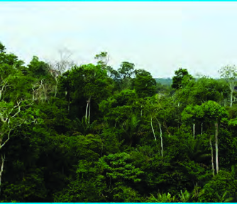<figcaption>Figure fig_ch03_p044_02 (Page 44)</figcaption></figure>
  <figure class="diagram-card" id="fig_ch03_p044_03">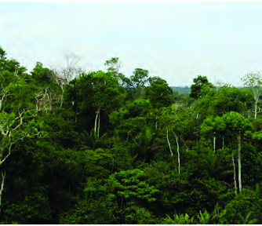<figcaption>Figure fig_ch03_p044_03 (Page 44)</figcaption></figure>
  <div class="page-content">
    <p>‹šuc-<br>44<br>iĹ¢ŽŦDzÄ–Œ‚ā‘›¡ £†–Åu›s––DzzšāÇ<br>iĹ¢ŽŦDZÄ –Œ‚Ĺ›¡ £†–Å<br>u›s––DZzšāÇڝcn¡ £““›<br>…DZŒĬ§‹žƂՂ›sšš“ǙŒĴ›¡ź<br>–Ǵ‹š“cmųœv}sā‘š§£†–Å<br>u›s ––DZzšā‘›¡ h £““›<br>…DZś†§sšŽcŒ†•DZ¡źg}¡ˆ}<br>s‘›Ƽš¡‚ „œÅvsšc pŽ Ƃ¢„<br>”¡ĹŒĴ›¡†c sšš“Ǚ¡c<br>ŒšŅce†sžv}sā‘šÚ›“‘Žų<br>––DZā‘š§£†–Åu›s––DZzš<br>āÇmų›¡ƀ}ų‚§<br>iĹ¢ŽŦDZÄ–Œ‚Ĺ›Æ¡ˆš‚¡“<br>sš¡ƀ}ų £†–Åu›s––DZzš<br>ā‘š§x“¡} ¡sš}Ĺ›Ğǫ‚§<br>z<br>iǑ¢Œtg¡ˆš’›c“†āÇ<br>z<br>iǑ¢ŒtŒÇښ}sÇ<br>z<br>x‚ƀ†›“†āÇ<br>iǑ¢Œt g¡ˆš’›c“†ā¡‘ ŽĬš› ‚›Ž›Úǰ “ŽĬ g<br>¡ˆš’›csš}sÇ fÅŝ g¡ˆš’›csš}sÇ mų›“š§<br>e“<br>70 ¡–ź›ŒœǮ›†c 100 ¡–ź›ŒœǮ›†cg}›Æ“šÅ•›sŒ’‹›Úų<br>Ƃ¢„”ā‘›š§ “ŽĬ g¡ˆš’›csš}sÇ sš¡ƀ}ų‚§<br>“ŽĬ eŦŽœäǙ›‚››Æ ns¢„”c<br>6<br>Œ‚Æ<br>8 f’§x<br>“¡Ž h ––DZāÇ g ¡ˆš’›Úų iĹÅƂ¢„”›¡ –Œ‚<br>ā‘›c Šœ—š›c“ŽĬg¡ˆš’›c“†āÇsš¡ƀ}ų<br>100 ¡–ź›ŒœǮ›†c 200 ¡–ź›ŒœǮ›†cg}›Æ“šÅ•›sŒ’‹›Úų<br>¡}š§‹šŠÅ¢ŒtiÇ¡ƀ}ų –›“š›s§‚š’§“Žp›•›¡c<br>ˆDŽ›ŒŠcuš‘›¡c x› ‹šuāÇ mų›“›}ā‘›š§ fÅŝ<br>g¡ˆš’›csš}sÇsš¡ƀ}ų‚§<br>¢‚Ú§ –šÆ ”›•ǰ Œ—“ ¡†Ƽ› xŭ†c mų›“ iǑ¢Œt<br>g¡ˆš’›c“†ā‘›Æsš¡ƀ}ų x›––DZ“Åuā‘š§<br>iĹ¢ŽŦDZÄ –Œ‚ā‘›Æ ‚šŽ‚¢ŒDZ† Œ’ sž}‚Æ  ‹›Úų<br>Ƃ¢„”ā‘›Æ ¢‚ڝc ŒǮ§ ƽäā‘c e“Ʃ›}›Æ ˆÆ¢Œ}s‘c<br>x›Ņc2.19<br>iǒ¢ŒtfÅŝg¡ˆš’›csš}sÇ</p>
  </div>
</section>
<section class="page-section" id="page-45">
  <div class="page-header"><span class="page-number">Page 45</span></div>
  <figure class="diagram-card" id="fig_ch03_p045_01"><figcaption>Figure fig_ch03_p045_01 (Page 45)</figcaption></figure>
  <figure class="diagram-card" id="fig_ch03_p045_02"><figcaption>Figure fig_ch03_p045_02 (Page 45)</figcaption></figure>
  <figure class="diagram-card" id="fig_ch03_p045_03"><figcaption>Figure fig_ch03_p045_03 (Page 45)</figcaption></figure>
  <figure class="diagram-card" id="fig_ch03_p045_04">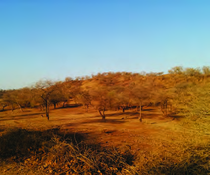<figcaption>Figure fig_ch03_p045_04 (Page 45)</figcaption></figure>
  <figure class="diagram-card" id="fig_ch03_p045_05"><figcaption>Figure fig_ch03_p045_05 (Page 45)</figcaption></figure>
  <figure class="diagram-card" id="fig_ch03_p045_06"><figcaption>Figure fig_ch03_p045_06 (Page 45)</figcaption></figure>
  <figure class="diagram-card" id="fig_ch03_p045_07"><figcaption>Figure fig_ch03_p045_07 (Page 45)</figcaption></figure>
  <figure class="diagram-card" id="fig_ch03_p045_08"><figcaption>Figure fig_ch03_p045_08 (Page 45)</figcaption></figure>
  <figure class="diagram-card" id="fig_ch03_p045_09">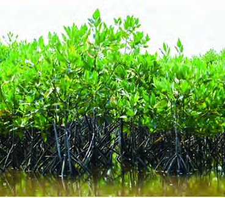<figcaption>Figure fig_ch03_p045_09 (Page 45)</figcaption></figure>
  <div class="page-content">
    <p>“›”š–Œ‚‹ž“›Æ<br>45<br>x›Ņc 2.20<br>iǒ¢Œt“ŽĬg¡ˆš’›csš}sÇ<br>x›Ņc2.21<br>iǒ¢ŒtŒÇښ}sÇ<br>sš¡ƀ}ų<br><br>e‚Œžc<br>pŽ<br>£Œ‚š† ‹žƂ¢„”ő”DZc h “†<br>Ƃ¢„”āÇÚ§ £s“Žų “ŽÇă<br>ښĹ›¡ź ‚}ÚśÆŒŽā¡‘Ƽǰ<br>ˆžÅŒšc gsÇ ¡ˆš’›Úų<br>‚ƉŒš› h “†āÇ  ŒŽāÇ<br>m’ų †›Æڝų ˆÆ¢Œ}s‘š›<br>Œšų<br>Œ’ڝ“csųsš›¢ŒƩ›¡ź“Å…<br>†“c sšŽc iĹ¢ŽŦDZÄ –Œ‚<br>ś¡ź ˆ}›Ěš§ ‹šuā‘›Æ ––DZ<br>zšāÇ“‘¡Ž ”•§sŒš§¡‚ڝ<br>ˆ}›ĚšÄˆĕšŠ›¡eŅ“ŽĬ<br>Ƃ¢„”ā‘›cˆ}›ĚšÄ—Ž›š†<br>ŽšzǙšÄ mų›“›}ā‘›c iǑ<br>¢ŒtšŒÇښ}sÇsš¡ƀ}šĬ§<br>£““›…DZŒšÅų ˆƼs‘csǮ›¡ă}›<br>s‘c †›Ě‚š§  iǑ¢ŒtšŒÇ<br>ښ}sÇŠšŠÆ¡ŠÅ“†DZhŦ<br>ƀ†sÇ£tÅ¢“ƀ§¡sď›ˆš–§<br>‚}ā›“š§ Ƃ…š† ––DZ“Åu<br>āÇ ŽĬ§ ŒœǮÅ iŽĹ›Æ “¡Ž<br>“‘Žų}¢–šÚ›mų ˆƼ§“›‹šu<br>ā‘c e}›Úš}š› x› g}ā‘›Æ<br>sš¡ƀ}ų<br>ŽšzǙš†›¡ “›”šŒš iƀˆš}<br>āÇ ”ŗz‚}šsāÇ ucuš–Œ<br>‚Ĺ›¡”ŗzx‚ƀsÇƖǥˆ<br>Ņš†„›¡}Ƃ‘–Œ‚āÇ–ŭÅ<br>ŠÄ ÆǮšƂ¢„”āÇ mų›“›}ā<br>‘›Æsš¡ƀ}ų –Ǵš‹š“›s––DZzš<br>ā‘š§ x‚ƀ†›“†āÇ (Swamp<br>Forest). ˆDŽ›ŒŠcuš‘›Æucuš–Œ‚Ĺ›¡ź<br>x‚ƀ§†›Ěe‚›“›”šŒšÆǮš<br>Ƃ¢„”Œš§–ŭŊÄg“›¡} †›Š›€<br>Œš›sš¡ƀ}ų –Ǵš‹š“›s––DZzš<br>ā‘š§ sĬÆښ}sÇ (Mangroves).<br>¢šÆŠcušÇs}“s‘¡}–¢ÿ‚c<br>sž}›š§–ŭŊÄŒŇDZāÇiÇ¡ƀ¡}<br>x›Ņc 2.22<br>x‚ƀ†›“†āÇ</p>
  </div>
</section>
<section class="page-section" id="page-46">
  <div class="page-header"><span class="page-number">Page 46</span></div>
  <figure class="diagram-card" id="fig_ch03_p046_01"><figcaption>Figure fig_ch03_p046_01 (Page 46)</figcaption></figure>
  <figure class="diagram-card" id="fig_ch03_p046_02"><figcaption>Figure fig_ch03_p046_02 (Page 46)</figcaption></figure>
  <figure class="diagram-card" id="fig_ch03_p046_03"><figcaption>Figure fig_ch03_p046_03 (Page 46)</figcaption></figure>
  <figure class="diagram-card" id="fig_ch03_p046_04"><figcaption>Figure fig_ch03_p046_04 (Page 46)</figcaption></figure>
  <figure class="diagram-card" id="fig_ch03_p046_06"><figcaption>Figure fig_ch03_p046_06 (Page 46)</figcaption></figure>
  <figure class="diagram-card" id="fig_ch03_p046_08"><figcaption>Figure fig_ch03_p046_08 (Page 46)</figcaption></figure>
  <figure class="diagram-card" id="fig_ch03_p046_09"><figcaption>Figure fig_ch03_p046_09 (Page 46)</figcaption></figure>
  <figure class="diagram-card" id="fig_ch03_p046_10"><figcaption>Figure fig_ch03_p046_10 (Page 46)</figcaption></figure>
  <div class="page-content">
    <p>‹šuc-<br>46<br>x›Ņc2.23<br>–ŭŊÄÆǯšƂ¢„”c<br>–ŭŊÄÆǯš<br>Ƃ¢„”Ĺ›¡źiˆ÷—x›Ņc<br>–ŭŽ›ÚĬÆ<br>gŦDZ›¡ Ƃ…š† £†–Åu›s ––DZzšā‘¡} “›‚ŽâŒ<br>Œš§x“¡} ¢xÅĹ›Ğǫ‹žˆ}śÆ(x›Ņc 2.24) †Æs››Ğǫ‚§<br>‹žˆ}c“›”s†c¡xƪ§iĹ¢ŽŦDZÄ–Œ‚ā‘›Æsš¡ƀ}ų<br>Ƃ…š†£†–Åu›s––DZzšāÇn¡‚Ƽš¡Œų§s¡Ĭśe“<br>ˆĞ›s¡ƀ}Ĺž<br>iǑ¢Œtg¡ˆš’›c“†āÇ<br>iǑ¢ŒtŒÇښ}sÇ<br>†›Ž“…› zzœ“›“ÅuāÇÚ§ sĬƖ–DZā‘¡} ¢“ŽsÇ –zœ“<br>f“š–“DZ“ǙƂ„š†c¡xƭų<br>£““›…DZŒšÅų ˆä›s‘¡} e‹¢sůc sž}›š§ h sĬÆ<br>ښ}sÇ–ŭŽ›mų›†csĬÆ¡ă}›sÇ–ŭŊÄÆǮ¡}<br>Ƃ¢‚DZs‚š§<br>eǮ§–§ †›Žœä›ă§  –ŭŊÄ ÆǮšƂ¢„”Ĺ›¡ź Ǚš†c<br>s¡ĬŞ<br>sĬÆښ}s‘¡}–“›¢”•‚s¡‘ڝ›ă§“›“Ž–š¢ÿ‚›s“›„DZ<br>¡}–—š¢Ĺš¡}pŽ–x›Ņ“›“Žc‚ƭššÚž</p>
  </div>
</section>
<section class="page-section" id="page-47">
  <div class="page-header"><span class="page-number">Page 47</span></div>
  <figure class="diagram-card" id="fig_ch03_p047_01"><figcaption>Figure fig_ch03_p047_01 (Page 47)</figcaption></figure>
  <figure class="diagram-card" id="fig_ch03_p047_02"><figcaption>Figure fig_ch03_p047_02 (Page 47)</figcaption></figure>
  <figure class="diagram-card" id="fig_ch03_p047_03">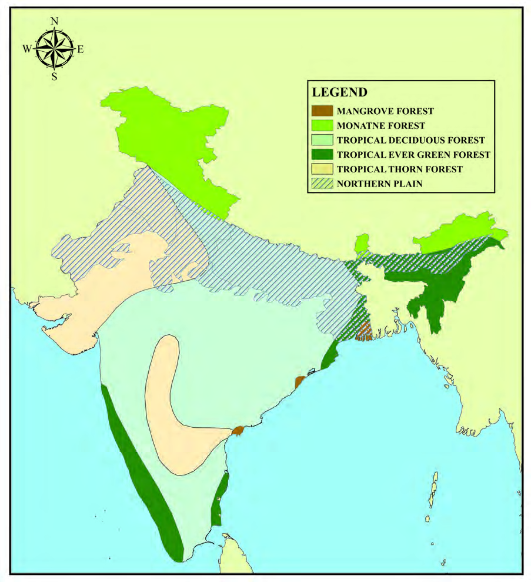<figcaption>Figure fig_ch03_p047_03 (Page 47)</figcaption></figure>
  <div class="page-content">
    <p>“›”š–Œ‚‹ž“›Æ<br>47<br>x›Ņc2.24<br>gŦDz<br>gŦDz<br>£†–Åu›s––DzzšāÇ<br>£†–Åu›s––DzzšāÇ<br>–žx›s<br>sĬÆښ}sÇ<br>ˆÅ“‚“†āÇ<br>iǒ¢Œtg¡ˆš’›c“†āÇ<br>iǒ¢Œt†›‚Dz—Ž›‚“†āÇ<br>iǒ¢ŒtŒÇښ}sÇ<br>iĹ¢ŽŦDzÄ–Œ‚c<br>eŠ›Ú}Æ<br>eŠ›Ú}Æ<br>ŠcušÇiÇÚ}Æ<br>ŠcušÇiÇÚ}Æ<br>MAP NOT TO SCALE</p>
  </div>
</section>
<section class="page-section" id="page-48">
  <div class="page-header"><span class="page-number">Page 48</span></div>
  <figure class="diagram-card" id="fig_ch03_p048_01"><figcaption>Figure fig_ch03_p048_01 (Page 48)</figcaption></figure>
  <figure class="diagram-card" id="fig_ch03_p048_03"><figcaption>Figure fig_ch03_p048_03 (Page 48)</figcaption></figure>
  <figure class="diagram-card" id="fig_ch03_p048_04"><figcaption>Figure fig_ch03_p048_04 (Page 48)</figcaption></figure>
  <figure class="diagram-card" id="fig_ch03_p048_05"><figcaption>Figure fig_ch03_p048_05 (Page 48)</figcaption></figure>
  <div class="page-content">
    <p>‹šuc-<br>48<br>iĹ¢ŽŦDzÄ–Œ‚ā‘›¡ŒĴ›†āÇ<br>iĹ¢ŽŦDZÄ –Œ‚ā‘›Æ “DZšˆsŒš› sš¡ƀ}ų ŒĴš§<br>mÚƌĴ§ ŒÆŒĴ§ Œ‚Æ s‘›ŒĴ§ “¡Žǫ ŒĴ›†ā‘¡}<br>“DZ‚DZǘ –Ǵ‹š“āÇ ˆÅŝų“š§ mÚƌĴ§ ŽšzǙš<br>†›ÆsĚ“›ɀ‚››Æsš¡ƀ}ųg“uzšĹ›¡ź–Œ‚<br>Ƃ¢„”ā‘›Æ“DZšˆsŒš›sš¡ƀ}ųucuš–Œ‚ā‘›ÆŽĬ§<br>“DZ‚DZǘā‘š mÚƌĴ›†āÇ Žžˆc¡sšĬ›ĞĬ§ tš„Å ‹cuÅ<br>mų›“š“ ŒÄ ˆš~‹šuāÇ  ˆŽ›¢”š…›ă§ g“¡} –“›<br>¢”•‚sÇm’‚›¢†šÚžƖǥˆŅucuš–Œ‚ā‘¡} sœ’§vĞ<br>ścŒ…DZvĞścgŎcŒĴ§sž}‚Æ¢†Åłcs‘›ŒĴ§<br>sÅų‚Œš› sš¡ƀ}ų Օ›Ú§ n¡ e†¢šzDZŒš§<br>mÚƌĴ§<br>Œ…DZucuš–Œ‚Ĺ›¡ź ¡‚ÚÄ ‹šuā‘›š› ¡xƣĴ§ sš¡ƀ<br>}ųgŽƠ›¡ź–šų›…DZŒš§hŒĴ›†§x“ƀ†›c†Æsų‚§<br>–ŭŊÄ ÆǮšƂ¢„”ā‘›Æ sš¡ƀ}ų ŒĴš§ “ŒĴ§<br>¡ˆš‚¡“hŒĴ›Æiƀ›¡źec”csž}‚š§Œcˆ”›Œ<br>ŒĴc sž}›ÚÅųŒĴš›‚§ÆǮšƂ¢„”ā‘›Æe†‹“¡ƀ}ų<br>–ŒŝzÚǮŒš§ h Ƃ¢„”ā‘›Æ gŎc ŒĴĬš“šÄ<br>sšŽŒšsų‚§<br>iĹ¢ŽŦDZÄ<br>–Œ‚ā‘›Æ<br>ˆ›}ā‘›c<br>z¢–x†Ĺ›ž¡} ‚œƿՕ› †}ś g}ā‘›Æ mÚƌĴ›†§<br>¢”š•c–c‹“›ă§“ŒĴš›Œš››ĞĬ§ˆDŽ›ŒŠcuš‘›¡ź<br>‚œŽƂ¢„”ā‘›ÆˆœǮ§ŒĴc sš¡ƀ}šĬ§<br>iĹ¢ŽŦDZÄ–Œ‚Ĺ›¡źˆ}›ĚšÄŽšzǙšÄiÇ¡ƀ}ųƂ¢„<br>”ā‘›Æ “DZšˆsŒš› sš¡ƀ}ų ŒĴš§ “ŽĬŒĴ§ v}†š<br>ˆŽŒš›ŒÆŽžˆ“c“‚Ǵ–Ǵ‹š““ŒǫhŒĴ›Æ£z“ǰ<br>”“c zǰ”“c “‘¡Ž s“š›Ž›Úc e‚›†šÆ h ŒĴ›Æ<br>––DZ“‘ÅăƩ§z¢–x†ce†›“šŽDZŒš§<br>†Æs››Ğǫ‹žˆ}c (x›Ņc 2.25) “›”s†c¡xƪ§iĹ¢ŽŦDZÄ–Œ‚<br>ā‘›¡“DZ‚DZǘ›†cŒĴs‘¡} “›‚ŽâŒc‚›Ž›ă›Ě§ˆĞ›s<br>¡ƀ}Ĺž<br>mÚƌĴ§<br>¡xƣĴ§</p>
  </div>
</section>
<section class="page-section" id="page-49">
  <div class="page-header"><span class="page-number">Page 49</span></div>
  <figure class="diagram-card" id="fig_ch03_p049_01"><figcaption>Figure fig_ch03_p049_01 (Page 49)</figcaption></figure>
  <figure class="diagram-card" id="fig_ch03_p049_02"><figcaption>Figure fig_ch03_p049_02 (Page 49)</figcaption></figure>
  <figure class="diagram-card" id="fig_ch03_p049_03">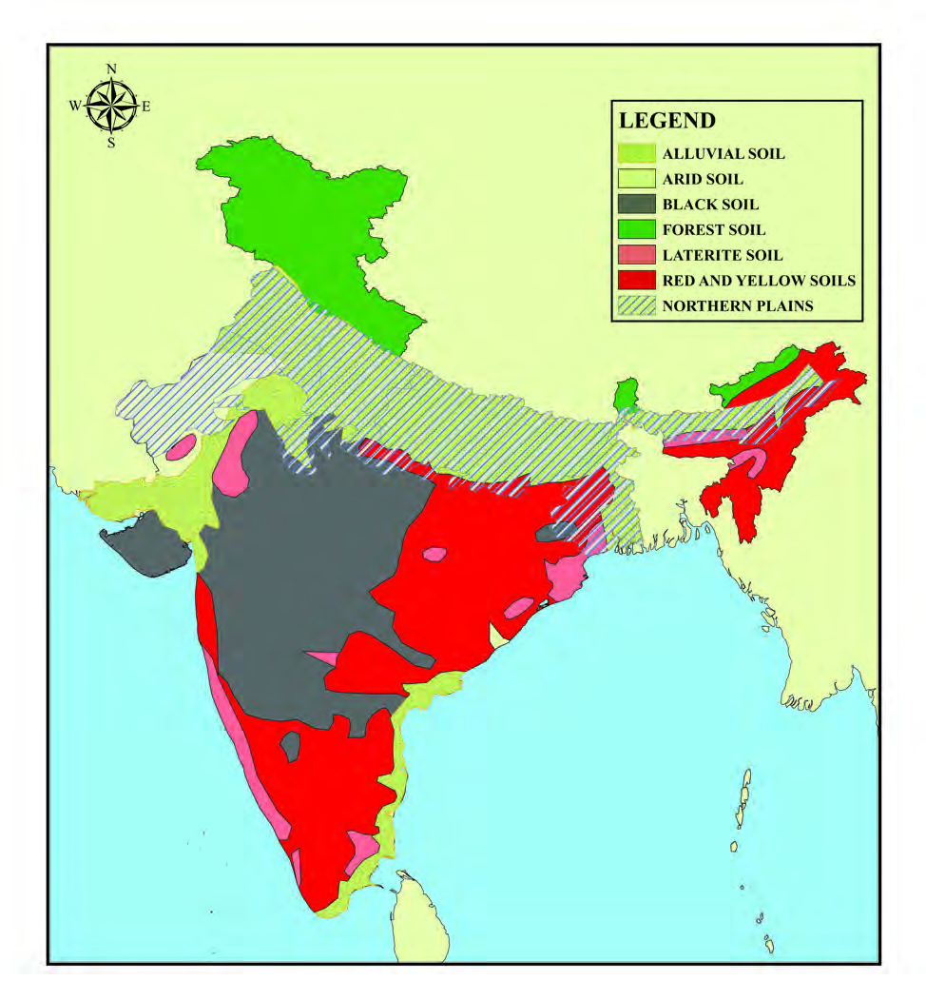<figcaption>Figure fig_ch03_p049_03 (Page 49)</figcaption></figure>
  <div class="page-content">
    <p>“›”š–Œ‚‹ž“›Æ<br>49<br>–žx›s<br>mÚƌĴ§<br>“ŽĬŒĴ§<br>sĹŒĴ§<br>“†ŒĴ§<br>¡xÿƌĴ§<br>¡xƣĴ§ŒĚŒĴ§<br>iĹ¢ŽŦDzÄ–Œ‚c<br>eŠ›Ú}Æ<br>eŠ›Ú}Æ<br>ŠcušÇiÇÚ}Æ<br>ŠcušÇiÇÚ}Æ<br>x›Ņc2.25<br>gŦDz<br>gŦDz<br>ŒĴ›†āÇ<br>ŒĴ›†āÇ<br>MAP NOT TO SCALE</p>
  </div>
</section>
<section class="page-section" id="page-50">
  <div class="page-header"><span class="page-number">Page 50</span></div>
  <figure class="diagram-card" id="fig_ch03_p050_01"><figcaption>Figure fig_ch03_p050_01 (Page 50)</figcaption></figure>
  <figure class="diagram-card" id="fig_ch03_p050_02"><figcaption>Figure fig_ch03_p050_02 (Page 50)</figcaption></figure>
  <figure class="diagram-card" id="fig_ch03_p050_03">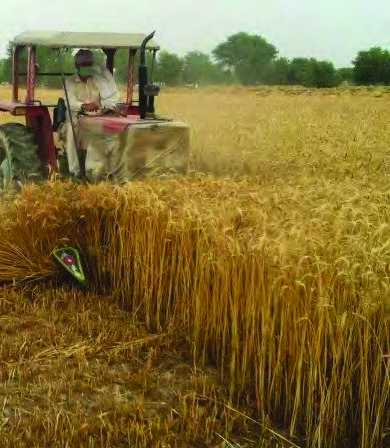<figcaption>Figure fig_ch03_p050_03 (Page 50)</figcaption></figure>
  <figure class="diagram-card" id="fig_ch03_p050_04"><figcaption>Figure fig_ch03_p050_04 (Page 50)</figcaption></figure>
  <div class="page-content">
    <p>‹šuc-<br>50<br>x›Ņc 2.27<br>‰‹ž›ǑŒšpŽiĹ¢ŽŦDzÄ–Œ‚Ƃ¢„”c<br>x›Ņc 2.28<br>iĹ¢ŽŦDzÄ–Œ‚Ƃ¢„”ā‘›¡…š†Dzە›<br>x›Ņc 2.26<br>iĹ¢ŽŦDzÄ–Œ‚Ĺ›¡pŽ†uŽƂ¢„”c<br>z†zœ“›‚c<br>‰‹ž›ǐŒšmÚƌĴ§†›ŽƀšÅų‹žƂՂ›m¢ƀš’c†œ¡Žš’<br>ڝǫ  †„›sÇ e†¢šzDZŒš sšš“Ǚ ‚}ā›“ iŎ<br>Œ—š–Œ‚Ĺ›¡ź–“›¢”•‚s‘š§†ƣ¡}ŽšzDZś¡ź¡ŒšĹc<br>‹ž“›ɀ‚›¡} †š›Æ pų§ ‹šuś†c ‚š¡’š§ iĹ¢Ž<br>ŦDZÄ –Œ‚Ĺ›¡ź  “›ǘœÅc mųšÆ h Œ—š–Œ‚Œš§<br>gŦDZ¡} ¡ŒšĹc z†–ctDZ¡} ˆs‚››¢¡c iǡښ<br>ǫų‚§ sšÅ•›s¢Œt¡ e}›Ǚš†<br>ŒšÚ›ǫgŦDZ¡}–Ơ„§“DZ“Ǚ¡<br>ˆ}ĹÅŝų‚›Æ†›ÅĴšsˆÿš§<br>“}ÚÄ<br>–Œ‚āÇڝǫ‚§<br>g“›¡}<br>¢uš‚Ơ§ ¡†Ƽ§ xc sŽ›Ơ§ ‚}ā›<br>“DZ‚DZǘ<br>“›‘sÇ<br>“DZšˆsŒš›<br>Օ›<br>¡xƭ¡ƀ}ųz¢–x†Ĺ›¡ź–—š<br>¢Ĺš¡}e‚›“›ˆŒšǫՕ›Žœ‚›h<br>Œ—š–Œ‚¡Ĺ gŦDZ¡} …š†DZƀŽ<br>šÚ›ŒšǮ›ƒšÅŒŽ‹žŒ›p’›¡sǫ–Œ<br>‚Ĺ›¡ź Œ’“Ä ‹šuā‘›c ¢š<br>s‘¡}c ¡›Æƀš‚s‘¡}c e‚›<br>“›ˆŒš ǂctĬ§ g‚§ “›<br>¢‚š‚›ǫ“DZ“–š“ÆڎĹ›¢Úc<br>†uŽ“ÆڎĹ›¢ÚchƂ¢„”¡Ĺ<br>†›Úų‚›†§sšŽŒš›</p>
  </div>
</section>
<section class="page-section" id="page-51">
  <div class="page-header"><span class="page-number">Page 51</span></div>
  <figure class="diagram-card" id="fig_ch03_p051_01"><figcaption>Figure fig_ch03_p051_01 (Page 51)</figcaption></figure>
  <figure class="diagram-card" id="fig_ch03_p051_02"><figcaption>Figure fig_ch03_p051_02 (Page 51)</figcaption></figure>
  <figure class="diagram-card" id="fig_ch03_p051_04"><figcaption>Figure fig_ch03_p051_04 (Page 51)</figcaption></figure>
  <figure class="diagram-card" id="fig_ch03_p051_05"><figcaption>Figure fig_ch03_p051_05 (Page 51)</figcaption></figure>
  <figure class="diagram-card" id="fig_ch03_p051_06"><figcaption>Figure fig_ch03_p051_06 (Page 51)</figcaption></figure>
  <div class="page-content">
    <p>“›”š–Œ‚‹ž“›Æ<br>51<br>tšŽ›‰§ šŠ› –š§„§ mų›ā¡†  Œžų§ “DZ‚DZ–§‚ sšÅ•›s<br>sšā‘›šš§iĹ¢ŽŦDZÄ–Œ‚ā‘›Æ“›“›…›†c“›‘sÇ<br>Օ›¡xƭų‚§¡‚ڝˆ}›ĚšÄŒÃ–žÃsšĹ›¢†š}§¢xÅų<br>“Žų sšÅ•›ssšŒš§ tšŽ›‰§ £”‚DZsšĹ›¡ź “Ž¢“š¡}<br>fŽc‹›ÚųsšÅ•›ssšŒš§šŠ›šŠ›“›‘s‘¡}“›‘¡“}<br>ƀ›†¢”•cfŽc‹›Úų £„ÅvDZSsĚ¢“†ÆښsšÅ•›s<br>sšŒš§–š§„§<br>iĹ¢ŽŦDZÄ –Œ‚ā‘›Æ Օ›¡xƭų Ƃ…š† “›‘s¢‘¡‚š<br>¡Úš¡ų§Œ†Ǡ›šÚ›¢ƼšiĹ¢ŽŦDZÄ–Œ‚ā‘›Æi}†œ‘c<br>h“›‘s¡‘ƼšcՕ›¡xƭ¡ƀ}ų›ƼƂš¢„”›sŒš›h“›‘s‘¡}<br>“›‚ŽĹ›cՕ›Žœ‚››c“DZ‚DZš–āÇn¡Ĭ§<br>iŎŒ—š–Œ‚c mų h ‹žƂՂ›“›‹šuś¡ź<br>“DZšž›<br>e‚›¡ź s›}ƀ§ e‚§ Žžˆc ¡sšĬ Ƃ⛍sÇ mų›“¡Ú›ă§<br>†›āÇ –šŒš†DZ…šŽ ¢†}›Ú’›Ě z–Ɯŗ›¡sšĬc ‰<br>–Ɯŗ›¡sšĬc–“›¢”•Œšh‹žƂՂ›Ú§gŦDZ›¡–cǗšŽc<br>Žžˆ¡ƀ}Ĺų‚›Æ uDZŒš ˆÿĬ§ ŽšzDZś¡ź sšÅ•›s<br>–Ơ„§“DZ“Ǚ¡}†¡ĞƼš›†›¡sšǫų‚›ž¡}‹äDZ–Žä<br>mų–Ƃ…š†ŒšiŎ“š„›‚ǴŒš§h‹žƂՂ›“›‹šucn¡Ǯ<br>}Úų‚§ –Œ‚¢Œsų –ĕšŽ “›†›Œ –­sŽDZāÇ –—<br>ǞšƒāÇŒƠŒ‚Æ¢Ú z†ā‘¡} “DZšˆ†Ĺ›†cg}ˆ’s›†c<br>s‘¡ŒšŽÚ››ĞĬ§e‚›ž¡}Žžˆ¡ƀĞŒ›NJŠ—–ǴŽ–c–§sšŽ<br>Œš§gų¡ĹgŦDZ¡}”Þ›c–­ŭŽDZ“c<br>x“¡} ¢xÅĹ›ĞǫˆĞ›sˆŽ›¢”š…›ÚžiĹ¢ŽŦDZÄ–Œ‚ā‘›Æ<br>Œžų§ “DZ‚DZ–§‚ sšÅ•›ssšā‘›š› Օ›¡xƭų Ƃ…š†<br>“›‘s‘š§ˆĞ›s›Æ¢xÅĹ›Ğǫ‚§q¢Žš sšÅ•›ssšā‘¡}<br>£„ÅvDZ“c e“›Æ q¢Žš sšā‘›c Օ›¡xƭų “›‘sÇ<br>n¡‚š¡Ú¡ųc<br>Œ†Ǡ›šÚž<br>“›“Ž–š¢ÿ‚›s<br>“›„DZ¡}<br>–—š¢Ĺš¡} e…›s “›“ŽāÇ sž}› iÇ¡ƀ}Ĺ› pŽ s›ƀ§<br>‚ƭššÚž<br>sšÅ•›ssšāÇ<br>Ƃ…š†“›‘sÇ<br>tšŽ›‰§(zžÃŒ‚Æ¡–ˆ§ǮcŠÅ<br>“¡Ž)<br>iǑ¢Œtš“›‘s‘š¡†Ƽ§ˆŽĹ›xc<br>Šz§‚“ŽŒ‚š“<br>šŠ›(p¢ÜšŠÅŒ‚ÆŒšÅ㧓¡Ž) Œ›¢‚šǑi¢ˆšǑ“›‘s‘š¢uš‚Ơ§<br>ˆ“ÅuāÇs}s§“ÅuāÇŠšÅ›<br>Œ‚š“<br>–š§„§(nƂ›ÆŒ‚ÆzžÃ“¡Ž)<br>ˆăڏ›ˆ’āÇsš›ĹœǮŒ‚š“</p>
  </div>
</section>
<section class="page-section" id="page-52">
  <div class="page-header"><span class="page-number">Page 52</span></div>
  <figure class="diagram-card" id="fig_ch03_p052_01"><figcaption>Figure fig_ch03_p052_01 (Page 52)</figcaption></figure>
  <figure class="diagram-card" id="fig_ch03_p052_02"><figcaption>Figure fig_ch03_p052_02 (Page 52)</figcaption></figure>
  <div class="page-content">
    <p>‹šuc-<br>52<br><br>1. ¢Ƃšzç§  gŦDZ›¡ z†zœ“›‚c Žžˆ¡ƀ}Ĺų‚›Æ iĹ<br> ¢ŽŦDZÄ–Œ‚āÇ“—›Úųˆÿ§<br>2. sšš“ǙcsšÅ•›s“›‘s‘cmų”œÅ•sśÆ¡–Œ›†šÅ<br> –cv}›ƀ›Úž<br>3. iĹ¢ŽŦDZÄ–Œ‚ā‘¡}ŽžˆœsŽc—›ŒšˆÅ“‚Žžˆœs<br> Ž“Œš› ŠŰ¡ƀĞ›Ž›Úų¡‚ā¡†? pŽ “›“Žc ‚ƭšš<br> ڝs<br>4 gŦDZ¡}‹žˆ}Žžˆ¢Žt‚ƭššÚ›iĹ¢ŽŦDZÄ–Œ‚ā‘¡}<br> Ƃš¢„”›s<br>“›‹šuāÇ<br>e}š‘¡ƀ}Ĺ›<br>㚖§Œ››Æ<br> Ƃ„Å”›ƀ›Úž<br>5. gŦDZ¡} ‹žˆ}Žžˆ¢Žt ‚ƭššÚ› Ƃ…š† ‹žƂՂ› “›‹šu<br> āÇ e}š‘¡ƀ}Ĺ› “DZ‚DZǘ †›āÇ †Æss iĹ¢Ž<br> ŦDZÄ –Œ‚ā‘›ž¡} p’sų †„›sÇ sž}› “Žă¢xÅŧ<br> 㚖§Œ››ÆƂ„Å”›ƀ›Úž<br>‚}ÅƂ“ÅņāÇ</p>
  </div>
</section>
<section class="page-section" id="page-53">
  <div class="page-header"><span class="page-number">Page 53</span></div>
  <figure class="diagram-card" id="fig_ch03_p053_01">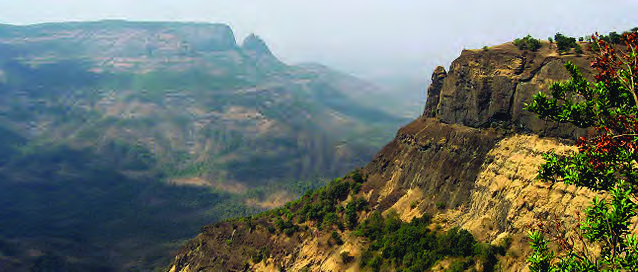<figcaption>Figure fig_ch03_p053_01 (Page 53)</figcaption></figure>
  <figure class="diagram-card" id="fig_ch03_p053_02">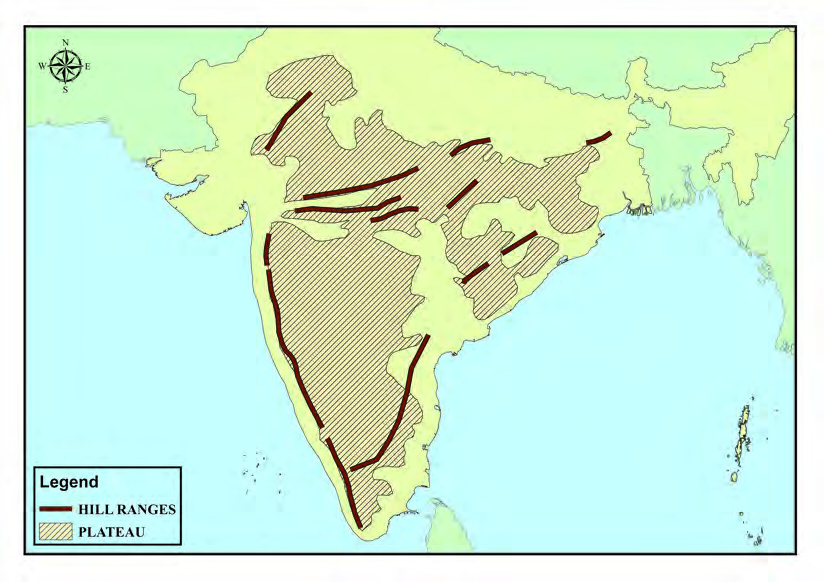<figcaption>Figure fig_ch03_p053_02 (Page 53)</figcaption></figure>
  <figure class="diagram-card" id="fig_ch03_p053_03"><figcaption>Figure fig_ch03_p053_03 (Page 53)</figcaption></figure>
  <figure class="diagram-card" id="fig_ch03_p053_04"><figcaption>Figure fig_ch03_p053_04 (Page 53)</figcaption></figure>
  <figure class="diagram-card" id="fig_ch03_p053_05"><figcaption>Figure fig_ch03_p053_05 (Page 53)</figcaption></figure>
  <figure class="diagram-card" id="fig_ch03_p053_06"><figcaption>Figure fig_ch03_p053_06 (Page 53)</figcaption></figure>
  <figure class="diagram-card" id="fig_ch03_p053_07"><figcaption>Figure fig_ch03_p053_07 (Page 53)</figcaption></figure>
  <div class="page-content">
    <p>‹­ŒxŽ›ŅŒāųˆœ~‹žŒ›<br>3<br>eŠ›Ú}Æ<br>eŠ›Ú}Æ<br>ŠcušÇiÇÚ}Æ<br>ŠcušÇiÇÚ}Æ<br>ˆDž›ŒvĞc<br>ˆDž›ŒvĞc<br>ˆžÅǂvĞc<br>ˆžÅǂvĞc<br>–žx›s<br>ˆÅǂ‚†›Ž<br>ˆœ~‹žŒ›<br>x›Ņc 3.1<br>eŽš“›<br>eŽš“›<br>“›ŰDz<br>“›ŰDz<br>–‚§ˆŽ<br>–‚§ˆŽ<br>Œ—š„›¢š<br>Œ—š„›¢š<br>£sŒžÅsųsÇ<br>£sŒžÅsųsÇ<br>£ŒÚ<br>£ŒÚ<br>Žšz§Œ—Æ<br>Žšz§Œ—Æ<br>sųsÇ<br>sųsÇ<br>gŦDZ›¡<br>“›“›…<br>‹žƂՂ›“›‹šuā¡‘ڝ›ăc<br>e‚›Æ<br>—›ŒšˆÅ“‚c<br>iĹ¢ŽŦDZĖŒ‚c mųœ ¢Œts‘¡} ‹­‚›s“c –ǰǗšŽ›s“Œš £““›…DZ<br>ā¡‘ڝ›ăcs’›ĚŽĬ§e…DZšā‘›ž¡}†›āÇŒ†Ǡ›šÚ›¢Ƽš<br>‹žˆ}c (x›Ņc 3.1)NJŗ›Úžg‚›Æe}š‘¡ƀ}Ĺ››Ğ‘‘ ‹žƂՂ›<br>“›‹šucn‚š§ ?<br>MAP NOT TO SCALE</p>
  </div>
</section>
<section class="page-section" id="page-54">
  <div class="page-header"><span class="page-number">Page 54</span></div>
  <figure class="diagram-card" id="fig_ch03_p054_01"><figcaption>Figure fig_ch03_p054_01 (Page 54)</figcaption></figure>
  <figure class="diagram-card" id="fig_ch03_p054_03"><figcaption>Figure fig_ch03_p054_03 (Page 54)</figcaption></figure>
  <figure class="diagram-card" id="fig_ch03_p054_04"><figcaption>Figure fig_ch03_p054_04 (Page 54)</figcaption></figure>
  <figure class="diagram-card" id="fig_ch03_p054_05"><figcaption>Figure fig_ch03_p054_05 (Page 54)</figcaption></figure>
  <div class="page-content">
    <p>54<br>‹šuc-<br>iˆ„ǴœˆœgŦDZ¡}‹žŽ›‹šu“ciÇ¡ƀ}ųŅ›¢sš–Œš†Œš<br>h ‹žƂՂ›“›‹šuś†§ –Œŝ†›Žƀ›Æ †›ų§ ”Žš”Ž›<br>600 <br>ŒœǮÅ Œ‚Æ 900 ŒœǮÅ “¡Ž iŽŒ‘‘‚š› sÚšÚ››ĞĬ§<br>“›”šŒš<br>ˆœ~Ƃ¢„”ā‘c<br>e‚›†§<br>e‚›Åś<br>‚œÅڝų<br>Œ†›Žs‘c sųs‘c ‚šŽ‚¢ŒDZ† f’csĚ †„œ‚šȺŽs‘c<br>£““›…DZŒšÅų<br>£†–Åu›s ––DZzŦzšā‘c iÇ¡ƀ}ų<br>‹­‚›s £““›…DZc †›Ě h ‹ž‹šuc iˆ„Ǵœˆœˆœ~‹žŒ›<br>mųš§ e›¡ƀ}ų‚§ iˆ„Ǵœˆœ gŦDZ¡} –›c—‹šu“c<br>iǡښǫųmų‚š§h¢ˆŽ›†§f…šŽc¢šsś¡nǮ“c<br>Ƃšc ¡xų ‹ž‹šuā‘›¡šųš§ iˆ„Ǵœˆœˆœ~‹žŒ› gŦDZ›¡<br>‹žƂՂ›“›‹šuā‘›ÆnǮ“c “›ɀ‚Œšiˆ„Ǵœˆœˆœ~‹žŒ››¡<br>‹­‚›s £““›…DZ“c<br>“›‹“ e}›Ĺc e“ gŦDZ›¡<br>z†zœ“›‚Ĺ›Æ<br>¡xĹų<br>–Ǵš…œ†“c<br>†ŒÚ§<br>sž}‚Æ<br>e}Ĺ›šc<br>ˆœ~‹žŒ›mųš¡Ŧ§?<br>xǮˆš}s‘›Æ †›ų§ iÅų§ Ǚ›‚›¡xƭų‚c n¡Ú¡<br>†›ŽƀšÅų‚ce‚›“›”šŒšiˆŽ›‚¢Ĺš}sž}›‚Œš ‹žƂ¢„<br>”ā‘š§ ˆœ~‹žŒ›sÇ Ǚš†¡Ĺ e}›Ǚš†ŒšÚ› ˆœ~‹žŒ›s¡‘<br>¡ˆš‚¡“ Œžųš›‚Žc‚›Ž›Úšc<br>z ˆÅ“‚ā‘šÆ“c ¡xƭ¡ƀЈœ~‹žŒ›sÇ (Inter montane plateau)<br>z ˆÅ“‚ e}›“šŽā‘›Æ Ǚ›‚›¡xƭų ˆœ~‹žŒ›sÇ (Piedmont<br>plateau)<br>z<br>“ÄsŽˆœ~‹žŒ›sÇ(Continental plateau)<br>g“¡Ú›ăǫsž}‚Æ“›“Žā‘ci„š—Žā‘cs¡ĬŞ<br>iˆ„Ǵœˆœˆœ~‹žŒ››ÆˆžÅĴŒš¢š ‹šu›sŒš¢šiÇ¡ƀĞ–cǙš†<br>āÇn¡‚Ƽš¡Œų§ ‹žˆ}ś¡ź–—š¢Ĺš¡}(x›Ņc 3.1)s¡ĬŞ<br>gŦDZ¡}Žšȸœ‹žˆ}csž}›g‚›†š›iˆ¢šu¡ƀ}ĹŒ¢Ƽš<br>zŒ…DZƂ¢„”§<br>z Œ—šŽšȸ<br>z<br>z</p>
  </div>
</section>
<section class="page-section" id="page-55">
  <div class="page-header"><span class="page-number">Page 55</span></div>
  <figure class="diagram-card" id="fig_ch03_p055_01"><figcaption>Figure fig_ch03_p055_01 (Page 55)</figcaption></figure>
  <figure class="diagram-card" id="fig_ch03_p055_02">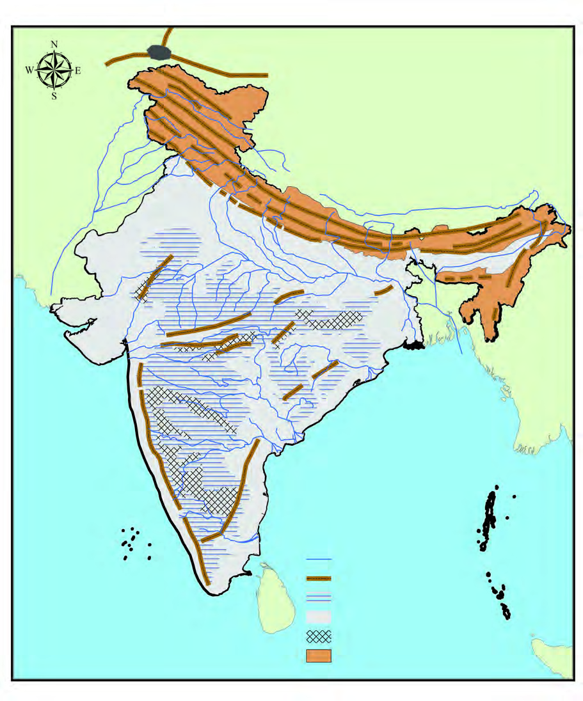<figcaption>Figure fig_ch03_p055_02 (Page 55)</figcaption></figure>
  <div class="page-content">
    <p>55<br>‹­ŒxŽ›ŅŒāųˆœ~‹žŒ›<br>eŠ›Ú}Æ<br>eŠ›Ú}Æ<br>ä„ǵœˆ§<br>ä„ǵœˆ§<br>ˆ}›ĚšÄ‚œŽ–Œ‚c<br>ˆ}›ĚšÄ‚œŽ–Œ‚c<br>s›’ÚÄ<br>s›’ÚÄ<br>‚œŽ–Œ‚c<br>‚œŽ–Œ‚c<br>fÄŒšÄ<br>fÄŒšÄ<br>†›¢ÚšŠšÅ„ǵœˆ–Œž—c<br>†›¢ÚšŠšÅ„ǵœˆ–Œž—c<br>ŠcušÇ<br>ŠcušÇ<br>iÇÚ}Æ<br>iÇÚ}Æ<br>ˆžÅ“vĞc<br>ˆžÅ“vĞc<br>ښÄ<br>ښÄ<br>ˆœ~‹žŒ›<br>ˆœ~‹žŒ›<br>eŽš“›<br>eŽš“›<br>ŒšÆ“š<br>ŒšÆ“š<br>ˆœ~‹žŒ›<br>ˆœ~‹žŒ›<br>ƒšÅŒŽ‹žŒ›<br>ƒšÅŒŽ‹žŒ›<br>–‚§ˆŽ<br>–‚§ˆŽ<br>Œ—š„›¢š<br>Œ—š„›¢š<br>Œ­Ĭ§eŠ<br>Œ­Ĭ§eŠ<br>£ŒÚ<br>£ŒÚ<br>Žšz§Œ—Æ<br>Žšz§Œ—Æ<br>sųsÇ<br>sųsÇ<br>¢yšĞš†šu§ˆžÅ<br>¢yšĞš†šu§ˆžÅ<br>ˆœ~‹žŒ›<br>ˆœ~‹žŒ›<br>Œ¢—ůu›Ž›<br>Œ¢—ůu›Ž›<br>£sŒžÅ<br>£sŒžÅ<br>sųsÇ<br>sųsÇ<br>†ƽŒ<br>†ƽŒ<br>ˆšÆ¡ÚšĬŒ<br>ˆšÆ¡ÚšĬŒ<br>z“š›<br>z“š›<br>¡„ššŠĞ<br>¡„ššŠĞ<br>f†Œ}›<br>f†Œ}›<br>“›ŰDz<br>“›ŰDz<br>–žx›s<br>†„›sÇ<br>ˆÅ“‚†›ŽsÇ<br>300-600ŒœǯÅ<br>0-300ŒœǯÅ<br>600-900ŒœǯÅ<br>900Œœǯ›†§Œs‘›Æ<br>i<br>Ĺ<br>Ž<br>ˆ<br>Å<br>“<br>‚<br>¢Œ<br>t<br><br>i<br>Ĺ<br>¢Ž<br>ŦDz<br>Ä<br>–<br>Œ<br>‚<br><br>c<br>i<br>Ĺ<br>¢Ž<br>ŦDz<br>Ä<br>–<br>Œ<br>‚<br><br>c<br>Œ<br>…<br>Dz<br><br>i<br>ų<br>‚<br>‚<br>}<br>c<br>Œ<br>…<br>Dz<br><br>i<br>ų<br>‚<br>‚<br>}<br>c<br>gŦDz<br>gŦDz<br>‹­‚›s‹žˆ}c<br>‹­‚›s‹žˆ}c<br>ˆDž›ŒvĞc<br>ˆDž›ŒvĞc<br>x›Ņc 3.2<br>MAP NOT TO SCALE</p>
  </div>
</section>
<section class="page-section" id="page-56">
  <div class="page-header"><span class="page-number">Page 56</span></div>
  <figure class="diagram-card" id="fig_ch03_p056_01"><figcaption>Figure fig_ch03_p056_01 (Page 56)</figcaption></figure>
  <figure class="diagram-card" id="fig_ch03_p056_02">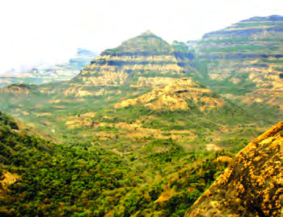<figcaption>Figure fig_ch03_p056_02 (Page 56)</figcaption></figure>
  <div class="page-content">
    <p>56<br>‹šuc-<br>x›Ņc 3.3<br>ښĈœ~‹žŒ›pŽő”Dzc<br>ˆ}›Ěš§ ˆDŽ›ŒvĞ“c s›’Ú§ ˆžÅ“vĞ“c eŽ›ss‘š‘‘<br>iˆ„Ǵœˆœˆœ~‹žŒ› iĹ¢ŽŦDZĖŒ‚Ĺ›†§ ¡‚Úš› Ǚ›‚›<br>¡xƭų 16 äc x‚ŽNJs›¢šŒœǮ¢š‘c “›ɀ‚›‘‘ h<br>‹ž‹šu¡Ĺ Ǚš†Ĺ›¡ź e}›Ǚš†Ĺ›Æ ¡ˆš‚¡“ ŽĬš›<br>‚›Ž›Úšc<br>i.<br>ښĈœ~‹žŒ›<br>ii. Œ…DZių‚‚}c<br>ښĈœ~‹žŒ›<br>ˆDŽ›ŒvĞcˆžÅ“vĞcmųœŒ†›ŽsÇڛ}›š›–‚§ˆŽˆÅ“<br>‚Ĺ›†§ ¡‚ڝ‘‘ “›”šˆœ~‹žŒ›Ƃ¢„”Œš§  ښÄ ˆœ~‹žŒ›<br>–‚§ˆŽˆÅ“‚c £ŒÚš†›Ž Œ—š„›¢šsųsÇ mųœ Œ<br>†›ŽsÇښĈœ~‹žŒ›¡}“}¢Úe‚›Žšsų<br>¡‚Ú§ mųÅĽŒǬ ̈́ä›ÃÎ mų –cȿ‚ ˆ„Ĺ›Æ†›ųš§<br>ښÄmų¢ˆŽĬš‚§<br>‹<br>ښĈœ~‹žŒ›¡}<br>Ǚš†“c<br>“DZšž›c<br>‹žˆ}śÆ<br><br>¢†šÚ›Œ†Ǡ›šÚž (x›Ņc3.2)<br>„”äځڛ†§<br>“Å•āÇڝŒƠ§<br>š“<br>p’s›ƀŽųĬš<br>Š–šÇЧ÷š£†Ǯ§†›–§‚}ā›ˆŽÆŽžˆ”›s‘š§ښÄ<br>ˆœ~‹žŒ›Ú§Žžˆc†Æsų‚§<br>ښĈœ~‹žŒ›¡} “}ڝˆ}›Ěš‹šuc Š–šÇЧ mų š“š<br>”›s‘šÆ†›Åƣ›‚Œš§h¢Œt¡ÍښÄğšƀ§Îmų“›‘›<br>ڝų Š–šÇЧ”›Ʃ§ eˆäc –c‹<br>“›ă§ Žžˆc¡sšǫų sĹ ŒĴš§ h<br>¢Œt¡} –“›¢”•‚ ͏›uŌĴ§Î (Regur <br>Soil) mų›¡ƀ}ų ‰ˆǐ›c z<br>–c‹Ž¢”•›Œ‘‘hŒĴ§¢“†›c<br>sšÅ•›s“›‘sÇÚ§–cŽä¢ŒsųˆŽ<br>Ĺ›Û•›Ú§n¡Ƃ¢šz†Ƃ„Œš‚›†šÆ<br>h ŒĴ›†§ ÍsĹ ˆŽĹ›ŒĴ§Î mųc<br>¢ˆŽĬ§<br>xĴšƠ§<br>gŽƠ§<br>Œõœ•DZc<br>ežŒ›†›c<br>‚}ā›<br>…š‚“āÇ<br>›uŌĴ›¡ź<br>Ƃ¢‚DZs‚š§<br>ښÄ<br>ˆœ~‹žŒ›¡} eŽ›ss‘šsų ˆDŽ›ŒvĞc<br>ˆžÅ“vĞcmųœŒ†›ŽsÇ‹žˆ}Ĺ›Æ (x›Ņc3.1)sĬ›¢Ƽ</p>
  </div>
</section>
<section class="page-section" id="page-57">
  <div class="page-header"><span class="page-number">Page 57</span></div>
  <figure class="diagram-card" id="fig_ch03_p057_01"><figcaption>Figure fig_ch03_p057_01 (Page 57)</figcaption></figure>
  <figure class="diagram-card" id="fig_ch03_p057_02"><figcaption>Figure fig_ch03_p057_02 (Page 57)</figcaption></figure>
  <figure class="diagram-card" id="fig_ch03_p057_03"><figcaption>Figure fig_ch03_p057_03 (Page 57)</figcaption></figure>
  <figure class="diagram-card" id="fig_ch03_p057_05"><figcaption>Figure fig_ch03_p057_05 (Page 57)</figcaption></figure>
  <figure class="diagram-card" id="fig_ch03_p057_06"><figcaption>Figure fig_ch03_p057_06 (Page 57)</figcaption></figure>
  <figure class="diagram-card" id="fig_ch03_p057_07"><figcaption>Figure fig_ch03_p057_07 (Page 57)</figcaption></figure>
  <figure class="diagram-card" id="fig_ch03_p057_08"><figcaption>Figure fig_ch03_p057_08 (Page 57)</figcaption></figure>
  <figure class="diagram-card" id="fig_ch03_p057_09"><figcaption>Figure fig_ch03_p057_09 (Page 57)</figcaption></figure>
  <figure class="diagram-card" id="fig_ch03_p057_11"><figcaption>Figure fig_ch03_p057_11 (Page 57)</figcaption></figure>
  <figure class="diagram-card" id="fig_ch03_p057_12"><figcaption>Figure fig_ch03_p057_12 (Page 57)</figcaption></figure>
  <figure class="diagram-card" id="fig_ch03_p057_13">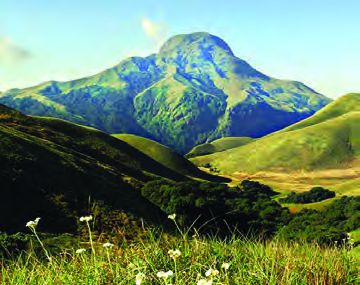<figcaption>Figure fig_ch03_p057_13 (Page 57)</figcaption></figure>
  <figure class="diagram-card" id="fig_ch03_p057_14"><figcaption>Figure fig_ch03_p057_14 (Page 57)</figcaption></figure>
  <figure class="diagram-card" id="fig_ch03_p057_15"><figcaption>Figure fig_ch03_p057_15 (Page 57)</figcaption></figure>
  <figure class="diagram-card" id="fig_ch03_p057_17"><figcaption>Figure fig_ch03_p057_17 (Page 57)</figcaption></figure>
  <figure class="diagram-card" id="fig_ch03_p057_18"><figcaption>Figure fig_ch03_p057_18 (Page 57)</figcaption></figure>
  <figure class="diagram-card" id="fig_ch03_p057_19"><figcaption>Figure fig_ch03_p057_19 (Page 57)</figcaption></figure>
  <figure class="diagram-card" id="fig_ch03_p057_21"><figcaption>Figure fig_ch03_p057_21 (Page 57)</figcaption></figure>
  <figure class="diagram-card" id="fig_ch03_p057_22"><figcaption>Figure fig_ch03_p057_22 (Page 57)</figcaption></figure>
  <div class="page-content">
    <p>57<br>‹­ŒxŽ›ŅŒāųˆœ~‹žŒ›<br>¢sŽ‘Ĺ›¡ź<br>s›’ڝ‹šuŚ›<br>Ǚ›‚›<br>¡xƭų–—DZˆÅ“‚†›Ž¡Ú›ă§†›āÇ<br>ˆ~›ă›ĞĬ¢Ƽš †ƣ¡} sšš“Ǚ›c<br>£z“£““›…DZśc<br>z†zœ“›‚Ĺ›c<br>†›ÅĴšs –Ǵš…œ†Œš§ –—DZˆÅ“‚†›Ž<br>Ʃǫ‚§ (x›Ņc 3.4)<br>¡‚Ú§ s†DZšsŒšŽ› Œ‚Æ “}Ú§ uzšĹ§ “¡Ž ns¢„”c 1600<br>s›¢šŒœǮÅ †œ‘Ĺ›Æ “DZšˆ›ăs›}ڝų h Œ†›ŽƩ§ ˆDŽ›Œ<br>vĞc (Western Ghats) mųš§ ¡ˆš‚“š ¢ˆŽ§ h Œ†›Žš§<br>ښĈœ~‹žŒ›¡}ˆ}›ĚšÄeŽ›s§“}ڝ†›ųc ¡‚¢ÚšĞ§<br>mųâŒĹ›ÆhˆÅ“‚†›Ž¡}iŽcsž}›“Žųiˆ„Ǵœˆœ<br>gŦDZ›¡<br>‚¡ų nǮ“c iŽŒ‘‘<br>¡sš}Œ}›š f†Œ}›<br>(2695 ŒœǮÅ)ˆDŽ›ŒvĞś¡f†Œ›š§ (x›Ņc 3.5).<br>x›Ņc 3.4<br>–—DzˆÅ“‚cpŽő”Dzc<br>x›Ņc 3.5 <br>f†Œ}›<br>f†Œ}›n‚–cǙš†Ĺ›<br>š§Ǚ›‚›¡xƭų‚§?<br>¢sŽ‘Ĺ›Æ f†Œ nŒ mųœ ¢ˆŽs‘›c e›¡ƀ}ų<br>ˆDŽ›ŒvĞŒ†›ŽƩ§sÅĴš}sc‚Œ›’§†š}§ ‹šuŧ†œu›Ž›mųc<br>Œ—šŽšȸ›Æ–—DZšŝ›mųŒš§ ¢ˆŽ§<br>‚Œ›’§†šĞ›¡†œu›Ž›†›Ž›ÆiÇ¡ƀĞ ¡„š¡ŠĞ (2637 ŒœǮÅ) h<br>¢Œt›¡Œ¡ǮšŽƂ…š†¡sš}Œ}›š§<br>¢sŽ‘Ĺ›¡z†zœ“›‚Ĺ›Æ<br>–—DZˆÅ“‚†›Ž¡}–Ǵš…œ†c<br>“›”s†c ¡xƪ§s›ƀ§<br>‚ƭššÚž<br>f†Œ}›¡}”Ž›šǙš†c<br>s¡Ĭś ‹žˆ}¢”tŽĹ›Æ<br>(My Own Atlas)iÇ¡ƀ}Ĺž<br>f<br>s<br>(M<br>ˆDŽ›ŒvĞś¡Ƃ…š†¡sš}Œ}›sÇn¡‚Ƽš¡Œų§s¡Ĭŝs<br>ˆ</p>
  </div>
</section>
<section class="page-section" id="page-58">
  <div class="page-header"><span class="page-number">Page 58</span></div>
  <figure class="diagram-card" id="fig_ch03_p058_01"><figcaption>Figure fig_ch03_p058_01 (Page 58)</figcaption></figure>
  <figure class="diagram-card" id="fig_ch03_p058_03"><figcaption>Figure fig_ch03_p058_03 (Page 58)</figcaption></figure>
  <figure class="diagram-card" id="fig_ch03_p058_04"><figcaption>Figure fig_ch03_p058_04 (Page 58)</figcaption></figure>
  <figure class="diagram-card" id="fig_ch03_p058_06"><figcaption>Figure fig_ch03_p058_06 (Page 58)</figcaption></figure>
  <div class="page-content">
    <p>58<br>‹šuc-<br>iˆ„ǴœˆœgŦDZ›¡–cǗšŽĹ›cz†zœ“›‚Ĺ›c†›ÅĴšs<br>–Ǵš…œ†Œ‘‘iˆ„Ǵœˆœ†„›s‘›¢¡cˆ›“›¡sšǫų‚§ˆDŽ›Œ<br>vІ›Ž›š§<br>‹žˆ}c (x›Ņc 3.2) ¢†šÚžg‚›Æzš“›ÚųsLjšÆ¡sšĬŒ<br>†ƼŒ Œ¢—ůu›Ž› ‚}ā› Œs‘¡} Ǚš†c sĬ›¢Ƽ ˆDŽ›Œ<br>vĞ¡Ĺ e¢ˆä›ă§ ‚šŽ‚¢ŒDZ† iŽc sĚ h sųs<br>‘¡} †›Žš§ ˆžÅ“vĞc p›•›¡<br>Œ—š†„œ‚}c<br>Œ‚Æ<br>‚Œ›’§†šĞ›¡ †œu›Ž›†›ŽsÇ “¡Ž ns¢„”c<br>800 s›¢šŒœǮš§<br>ˆžÅ“vĞś¡źf¡s†œ‘cs›’¢Úš¡Ğš’sųiˆ„Ǵœˆœ†„›sÇ<br>ˆžÅ“vĞś¡ź‚}Åă†Ǐ¡ƀ}Ĺ›s›’ÚÄ‚œŽ–Œ‚Ĺ›ž¡}<br>p’sųˆDŽ›ŒvĞ“cˆžÅ“vĞ“c†œu›Ž›Úųs‘›Æ–cuŒ›<br>ڝų<br>Œ…Dzių‚‚}c<br>–‚§ˆŽˆÅ“‚†›ŽƩ§ “}ڝ‘‘ “›”šˆœ~Ƃ¢„”Œš§ Œ…DZių‚<br>‚}c<br>ŒšÇ“šˆœ~‹žŒ›<br>mų§<br>“›‘›Úų<br>h<br>Ƃ¢„”Ĺ›¡ź<br>ˆ}›Ěš¢eŽ›s§eŽš“›ˆÅ“‚Œš§„œÅvsšŒšǫeˆ<br>Ž„†Ƃ⛍›ž¡}¢‚§Œš†c–c‹“›ă Ƃšc¡xų Œ}ڝˆÅ“‚<br>āÇÚ§eƒ“še“”›ǏˆÅ“‚āÇÚ§ (Residual Mountains) i„š—Ž<br>Œš§eŽš“›†›ŽƂ…š†Œ¢šŽ “›¢†š„–ĕšŽ ¢sůŒš<br>Œ­Ĭ§ eŠ eŽš“› †›Ž›š§ ŒšÇ“šˆœ~‹žŒ››¡ nǮ“c<br>iŽŒ‘‘ ¡sš}Œ}›c Œ­Ĭ§eŠ“š§<br>z ˆžÅ“vĞ¡Ĺ Œ›¡ăš’sųiˆ„Ǵœˆœ†„›sÇn¡‚ƼšŒš§?<br>z ˆžÅ“vĞś¡ Ƃ…š† Œ†›Žs‘¡} Ǚš†c s¡Ĭś ‹žˆ}<br> ¢”tŽĹ›Æ(My Own Atlas)iÇ¡ƀ}Ĺž<br>z †œu›Ž›Úųs‘¡}Ǚš†cs¡Ĭś‹žˆ}¢”tŽĹ›Æ(My Own <br>Atlas) iÇ¡ƀ}Ĺs<br>z Œ­Ĭ§eŠ“›¡ź Ǚš†cs¡Ĭś‹žˆ}¢”tŽĹ›Æ(My Own  Atlas) <br>iÇ¡ƀ}Ĺž<br>z Œ…DZių‚‚}śÆ †›ųc ucuš†„››¢Ú§ ¢†Ž›Ğ§ p’s›¢ăŽų<br><br>¢ˆš•s†„›¢‚§? ‹žˆ}c ¢†šÚ›s¡ĬŞ<br>z Œ…DZių‚‚}śÆ<br>†›ųc<br>Œ†š†„››Æ<br>p’s›¢ăŽų<br><br>¢ˆš•s†„›s¢‘¡‚Ƽšc?</p>
  </div>
</section>
<section class="page-section" id="page-59">
  <div class="page-header"><span class="page-number">Page 59</span></div>
  <figure class="diagram-card" id="fig_ch03_p059_01"><figcaption>Figure fig_ch03_p059_01 (Page 59)</figcaption></figure>
  <figure class="diagram-card" id="fig_ch03_p059_02">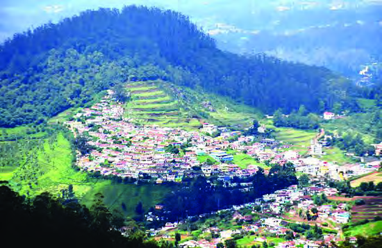<figcaption>Figure fig_ch03_p059_02 (Page 59)</figcaption></figure>
  <figure class="diagram-card" id="fig_ch03_p059_03"><figcaption>Figure fig_ch03_p059_03 (Page 59)</figcaption></figure>
  <figure class="diagram-card" id="fig_ch03_p059_04"><figcaption>Figure fig_ch03_p059_04 (Page 59)</figcaption></figure>
  <figure class="diagram-card" id="fig_ch03_p059_06"><figcaption>Figure fig_ch03_p059_06 (Page 59)</figcaption></figure>
  <figure class="diagram-card" id="fig_ch03_p059_07"><figcaption>Figure fig_ch03_p059_07 (Page 59)</figcaption></figure>
  <figure class="diagram-card" id="fig_ch03_p059_09"><figcaption>Figure fig_ch03_p059_09 (Page 59)</figcaption></figure>
  <figure class="diagram-card" id="fig_ch03_p059_10"><figcaption>Figure fig_ch03_p059_10 (Page 59)</figcaption></figure>
  <figure class="diagram-card" id="fig_ch03_p059_11"><figcaption>Figure fig_ch03_p059_11 (Page 59)</figcaption></figure>
  <figure class="diagram-card" id="fig_ch03_p059_12"><figcaption>Figure fig_ch03_p059_12 (Page 59)</figcaption></figure>
  <div class="page-content">
    <p>59<br>‹­ŒxŽ›ŅŒāųˆœ~‹žŒ›<br>Œ…DZių‚‚}ś¡ź s›’ڝ‹šuŚ›<br>Ǚ›‚›¡xƭų ˆœ~‹žŒ›š§ ¢yšĞš<br>†šu§ˆžÅˆœ~‹žŒ›Žšz§Œ—ÆsųsÇÚ§<br>¡‚Úš› Ǚ›‚›¡xƭų ¢yšĞš†š<br>u§ˆžÅ Ƃ¢„”c gŦDZ›¡ nǮ“c<br>–ƠųŒš …š‚“›‹“ s“š§<br>gŽƠ›Ž§ ¢Ššs§£–Ǯ§ Œšcu†œ–§<br>¡xƠ§<br>‚}ā›<br>¢š—…š‚Ú‘c<br>xĴšƠsƼ§sÆڎ›‚}ā›e¢š<br>—…š‚Ú‘c h ¢Œt¡ –Ơ<br>ųŒšÚų…š‚t††“c…š‚e…›<br>ǐ›‚ “DZ“–šā‘Œš§ h Ƃ¢„<br>”¡Ĺ Ƃ…š† –šƠśs Ƃ“ÅĹ<br>†āÇ<br>‚Œ›’§†š}§sÅĴš}sc¢sŽ‘cmųœ–cǙš<br>†ā‘¡}<br>–cuŒ¢Œt›¡<br>Œ†›Žs¡‘<br>š§†œu›Ž›ÚųsÇmų“›‘›Úų‚§<br>Ƃ…š†ŒšcˆDŽ›ŒvĞŒ†›Ž¡} ‹šuŒš<br>g“›}¡Ĺ nǮ“c NJ¢ŗŒš Œ¢šŽ<br>–t“š–¢sůā‘š§ jĞ› sž†žÅ ¢sšĞ<br>u›Ž›mų›“sųs‘¡}Žšč›mų›¡ƀ<br>}ų jĞ› (i„uŒįc) „䛢ŦDZ›¡<br>pŽ Ƃ…š† “›¢†š„–ĕšŽ¢sůŒš§ Œ¢†š<br>—Ž“c“›”š“ŒšˆÆ¢Œ}s‘cŒ›¢‚šǑ<br>––DZzšā‘c–t”œ‚‘Œšsšš“Ǚc<br>¢‚›¢ĹšĞā‘c“š›zDZˆăڏ›Û•›c<br>Œš›†DZŒÞŒšˆŽ›Ǚ›‚›c†œu›Ž›¡<br>fsŕsŒšÚų<br>£z“£““›…DZ–Ơų<br>Œš †œu›Ž›š§ gŦDZ›¡ f„DZ¡Ĺ<br>£z“Œįi„DZš†c<br>†œu›Ž›<br>iˆ„ǵœˆœˆœ~‹žŒ››¡<br>sšš“ǚš£““›…Dzc<br>iˆ„Ǵœˆœˆœ~‹žŒ››Æ¡ˆš‚¡“iǑ¢ŒtŒÃ–žÃsšš“Ǚ<br>š§ e†‹“¡ƀ}ų‚§ mųšÆ ‚šˆ†››c Œ’›¡ŒƼšc<br>uDZŒš Ǚsš“DZ‚DZš–āÇ Ƃs}Œš§ iˆ„Ǵœˆœ ˆœ~‹žŒ›<br>›¡ sšš“Ǚ¡<br>–Ǵš…œ†›Úų v}sāÇ m¡ŦƼšŒš›<br>Ž›Úšc?<br>z iǑ¢Œt›¡Ǚš†c<br>z iˆ„Ǵœˆ›¡ź–“›¢”•fՂ›<br>z –ŒŝśÆ†›ųǫesc<br>z ˆÅ“‚†›Žs‘¡}s›}ƀ§<br>z ŒÃ–žÃsšǮ›¡źu‚›<br>¢yšĞš†šu§ˆžÅ<br>ˆœ~‹žŒ›¡}Ǚš†c<br>s¡Ĭś‹žˆ}<br>¢”tŽĹ›Æ<br>(My Own Atlas) ¢Žt<br>¡ƀ}Ĺž</p>
  </div>
</section>
<section class="page-section" id="page-60">
  <div class="page-header"><span class="page-number">Page 60</span></div>
  <figure class="diagram-card" id="fig_ch03_p060_01"><figcaption>Figure fig_ch03_p060_01 (Page 60)</figcaption></figure>
  <figure class="diagram-card" id="fig_ch03_p060_03"><figcaption>Figure fig_ch03_p060_03 (Page 60)</figcaption></figure>
  <figure class="diagram-card" id="fig_ch03_p060_04"><figcaption>Figure fig_ch03_p060_04 (Page 60)</figcaption></figure>
  <figure class="diagram-card" id="fig_ch03_p060_05"><figcaption>Figure fig_ch03_p060_05 (Page 60)</figcaption></figure>
  <figure class="diagram-card" id="fig_ch03_p060_06"><figcaption>Figure fig_ch03_p060_06 (Page 60)</figcaption></figure>
  <figure class="diagram-card" id="fig_ch03_p060_07"><figcaption>Figure fig_ch03_p060_07 (Page 60)</figcaption></figure>
  <figure class="diagram-card" id="fig_ch03_p060_09"><figcaption>Figure fig_ch03_p060_09 (Page 60)</figcaption></figure>
  <figure class="diagram-card" id="fig_ch03_p060_10"><figcaption>Figure fig_ch03_p060_10 (Page 60)</figcaption></figure>
  <figure class="diagram-card" id="fig_ch03_p060_11"><figcaption>Figure fig_ch03_p060_11 (Page 60)</figcaption></figure>
  <figure class="diagram-card" id="fig_ch03_p060_13"><figcaption>Figure fig_ch03_p060_13 (Page 60)</figcaption></figure>
  <div class="page-content">
    <p>60<br>‹šuc-<br>ˆÅ“‚¢Œts¡‘š’›ă†›ÅśšÆ<br>iˆ„Ǵœˆœˆœ~‹žŒ››Æ iǑsš¡Ĺ<br>”Žš”Ž›‚šˆc<br>30 ›÷›<br>¡–Æ•DZ<br>–›†§ Œs‘›š›Ž›Úc ŒšÅ㧠Œš–<br>śÆښĈœ~‹žŒ››¡ ‚šˆ†›<br>–š…šŽ 38 ›÷›¡–Æ•DZ–§ “¡Ž<br>iŽšĬ§ˆDŽ›ŒvĞś¡iÅų<br>Ƃ¢„”ā‘›Æ¡ˆš‚¡“sĚ‚šˆ<br>†›š§ ¢Žt¡ƀ}Ĺšǫ‚§<br>ˆœ~‹žŒ›¡}iÇƂ¢„”ā‘›Æ£”‚DZ<br>sšĹ§ £„†›s‚šˆšŦŽc<br>(Diurnal <br>Range of Temperature) “‘¡Ž sž}šĬ§<br>ŽšŅ›‚šˆcuDZŒš›sų‚š§<br>sšŽc<br>pŽ Ƃ¢„”ŧ pŽ „›“–c e†‹“¡ƀ}ų sž}› ‚šˆ†›c<br>sĚ‚šˆ†›c ‚ƣ›ǫ “DZ‚DZš–Œš§ £„†›s‚šˆšŦŽc<br>ˆDŽ›ŒvĞś¡źˆ}›Ěš¢xŽ›“§p’›¡siˆ„Ǵœˆœˆœ~‹žŒ››¡<br>Œ›Ú“šcƂ¢„”ā‘›ÆŒ’Œ›‚¢Œš “›Ž‘¢Œšf§¡‚ڝˆ}›Ěš<br>ÄŒÃ–žÃsšĹ§ ˆDŽ›ŒvĞś¡ź ˆ}›Ěš¢ xŽ›“›Æ ‚Ğ›<br>iŽųhÅƀ“š—›š “š‚ÚscsšǮ›†§e‹›ŒtŒš<br>“”ŧ “›¢‚š‚›ÆŒ’Ʃ§sšŽŒš“sc ¡xƭų 250 ¡–ź›<br>ŒœǮÅŒ‚Æ400 ¡–ź›ŒœǮÅ“¡Žš§gښ‘“›Æˆ}›ĚšÄ<br>‚œŽĹcˆDŽ›ŒvĞś¡źˆ}›Ěšc ‹›Úų Œ’mųšÆˆDŽ›Œ<br>vĞś¡ź s›’¢ÚxŽ›“›Æ‚š’§ų›āų “šhÅƀŽ—›‚Œš<br>‚›†šÆ s›’¢Ú xŽ›“›¢†š}§<br>¢xÅų§<br>Ǚ›‚›¡xƭų<br>ˆœ~‹žŒ›<br>Ƃ¢„”ā‘›Æ“›Ž‘Œš›ŒšŅ¢Œ Œ’‹›Úšǫž (50 ¡–źŒœǮ›Æ<br>s“§) gŎc Ƃ¢„”ā¡‘ Œ’†›’Æ Ƃ¢„”āÇ (Rain Shadow <br>Regions)mųš§ “›‘›Úų‚§<br>£—„ŽšŠš„§ †šu§ˆžÅ ŠcužŽ £Œ–žŽ ‚}ā› Ƃ¢„<br>”ā‘›¡ £„†›s‚šˆ–“›¢”•‚sÇe¢†Ǵ•›ă›ž<br>jĞ› ¡sš£}چšÆ “†š}§ ‚}ā› Ƃ¢„”āÇ iǑ¢Œt<br>›š§<br>Ǚ›‚›¡xƭų¡‚ÿ›c<br>‚Ĺ<br>sšš“Ǚš§<br>¡ˆš‚¡“e†‹“¡ƀ}ų‚§mŦ¡sšĬ§?<br>iˆ„ǵœˆ›†§ˆĹcˆœ~‹žŒ›¢š<br>e¡‚ŽšzǙš†›¡z§–šÆŒœ›Æsš¡ƀ<br>}ų ŒšÅŠ›Ç¢ǟǮ§†›–§ ‚}ā›sšš<br>ŦŽ›‚ ”›š†›Åƣ›‚‹šuāÇ iˆ„Ǵœˆœˆœ~<br>‹žŒ›¡}<br>‹šuŒš¡ų§<br>s¡Ĭś›ĞĬ§<br>sž}š¡‚ gŦDZ¡} “}ڝs›’Úš› ¢“›Ğ<br>†›Æڝų ¢Œvš ˆœ~‹žŒ›c ‹­Œx†<br>ā‘šÆƂ…š†iˆ„Ǵœˆœˆœ~‹žŒ››Æ†›ųc<br>¢“Å¡ƀĞ‚š¡ų§sÚšÚųuzšĹ›¡<br>să§s‚DZš“šÅ ¢Œt›¡ ”›š‚ƀsÇ<br>iˆ„Ǵœˆœˆœ~‹žŒ›¡} ‹šuŒš¡ų§ s¡Ĭ<br>ś›ĞĬ§<br>i</p>
  </div>
</section>
    </main>
    <footer>
      <div class="nav-bar"><a href="part_1_pages_2140.html">← Pages 21-40</a><a href="index.html">☰ Index</a><a href="part_1_pages_6180.html">Pages 61-80 →</a></div>
    </footer>
  </div>
</body>
</html>
